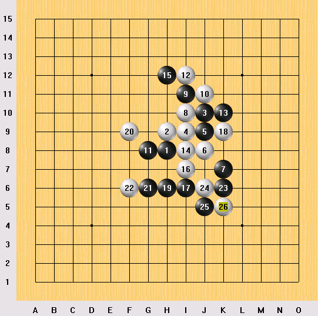

背水一战！棋王扳回一局
#1 背水一战！棋王扳回一局 作者：茗弈求学 发表时间：2010-5-18 19:16:44
上海消息 通讯员：水月）5月16日，第三届上海五子棋棋王战决赛五番棋进行了第三场对局。在前两局中，挑战者贺启发以2：0领先，现任棋王顾炜已经到了背水一战的境地。在天王山的角逐中，面对贺启发“疏星”布局，顾炜提出交换。实战的黑7、9是棋王的策略，事后复盘时顾炜表示，对手对于流行变化非常熟悉，在已经无路可退的情况下，只能选择一些不太流行的古老变化尝试一下。序盘至黑13均是定式下法，贺启发的白14变招，这也是全局第一个争议。局后贺启发表示，当时主要是担心按照正常定式下，对手会有埋伏，因此想及早变招，原本想下的并不是实战的点，但是转念一想，依稀记得看见别人下过，效果也不错，就改变了想法。顾炜经过考虑，黑15选择了比较强硬的分隔之法予以应对。赛后他说，这个白14在4年前的上海联赛上，曾经和陈文夏五段下过，当时自己执白最后败了，因此还依稀有点印象。全局的第2个争议出现在白20手，顾炜经过考虑，黑21、23后获胜，艰难地扳回一分。贺启发坦言考虑和实际发生偏差，导致速败。
（注意到顾棋王这次来比赛带来了棋王印，如果不能挽回3个赛点，棋王印就将易主。）
贺启发开局疏星，顾炜交换，选择了实战的5和G9。弈至26手，贺启发落子以后思索片刻，投子认负。
相关长考：14=7分，15=8分，20=12分，21=7分，23=7分。
至此双方比分为2：1，贺启发仍然握有2个赛点，如果想卫冕成功则顾炜必须在剩下的2盘中至少取得1.5分。

中华连珠